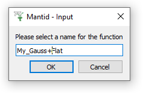
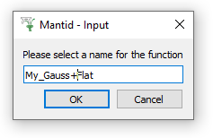

\(\renewcommand\AA{\unicode{x212B}}\)
A more Complex case¶
Activating the Fitting tools¶
Load HRP39182.raw and plot the spectrum number 1
Zoom in on the peak near 93150 microseconds, as below
Click on the Fit Toolbar button:

Three things happens when you click on the Fit Toolbar button:
The Fit Property Browser, by default, will position itself on the left of the plot window
Fitting options become available by right-clicking on the plot
Fit function items are added to the plot, initially the two green vertical dashed lines marking the start and end of the fitting range.
Select the Fitting range¶
The fitting range is the region of the data where you will attempt to do a fit, represented by the green vertical dashed lines. These match the StartX and EndX values in the Fit Property Browser.
You can click and drag the vertical dashed lines to alter the range, which will update the StartX and EndX values.
You can click on the StartX/EndX values and type in new ones, which will update the dashed lines on the plot.
Other Settings properties¶
In addition to StartX/EndX there are a number of other essential fit setting properties including:
Workspace and Workspace Index: which workspace to fit? Automatically filled based on the plotted spectrum
Minimizer: Choose the minimizer appropriate for your fit model
Cost function: A measure of the quality of a fit.
Plot Difference: When the result of a fit is displayed optionally the difference between the model and the fit can also be displayed
More documentation of these is available from Fitting.
Functions properties: Setting up a fit model¶
Let’s build a model consisting of a peak and a background function.
Right-click on the plot, and choose ‘Select peak type’ –> select Gaussian. Move the mouse cursor to click near the top of the peak.
Click on the central solid red line and drag it sideways and upwards to set the initial peak centre and height. Drag either one of the dashed red lines to set the initial Full Width Half Maximum (FWHM) of the peak.
Again, right-click on the plot, and choose ‘Add background’ –> select FlatBackground
Note that two fit functions have appeared in the Fit
Property Browser called f0-Gaussian and f1-FlatBackground.
Click on the triangles beside these functions to reveal their fit parameters.
Just as with the StartX/EndX values, dragging the solid and dashed red lines on the plot updates these values, while changing the values will update the positions of the red lines on the plot.
Now you have created a CompositeFunction model, which is the sum of a Gaussian and a Flat-background
i.e. f0-Gaussian + f1-FlatBackground
Adjusting fit function parameter¶
The initial fit parameter values can affect the speed and the final result obtained from fitting. In general you want starting parameter that are a close as possible to the correct result.
Mantid has a tool to help you with this! Turn on “Display > Plot Guess”.
{kind=link}
This plots the model of the initial parameters on top of the raw data.
The aim is to have this plot and your data overlap reasonable well before you do the actual fit. Note this is not an absolute requirement but your chances of a successful fit increase this way.
Saving a model¶
You may set up a custom model, which you can save and reload later.

 

Save the setup with a memorable name. Clear the Model. Next, try to import your setup under “Setup > Custom Setup” (note this replaces all functions in the browser).
Tying and constraining fit parameters¶
The Mantid fitting framework allows you to tie or constrain parameters.
Tying sets a parameter equal to an expression of other parameters (from any of the selected functions).
Fixing is basically tying a parameter to a number (constant).
Constraining a parameter keeps its value above a lower bound, below an upper bound, or both! The parameter value obeys the constraint within the error. e.g. If a parameter is constrained to be positive, the result could be -1.0 if the error is -1.1.
To set a constraint/tie right-click on a parameter name:
The menu offers three options:
Fix this parameter to its current value.
Constraint: define a lower or upper bound, or both.
Tie: tie this parameter to an arbitrary expression.
The tying expression can be as simple as a parameter name:
f0.Height
Note that parameter names of a model include prefixes such as f0.
which indicate the particular function they belong to.
Try using the “Custom Tie” option from the menu to tie parameter f1.A0 from our built model to the custom function:
2-f0.Height
As this sets the FlatBackground height, A0 = 2 - GaussianHeight, the calculated Peak Height will be exactly 2 units above 0 (the x-axis).
Execute your fit¶
After the model has been defined, its initial values set, any ties and constraints defined, we are ready to run a fit. It is done by selecting the Fit option from the Fit menu:
Now examine the results in the Fit Property Browser and the output workspaces, as before. You can even show error bars to compare how good your fit is to the errors. To do so, as below, enter Figure Options (Gear Symbol) > Curves tab, check the curve selected is “spec 1”. Then un-Hide Errorbars, giving them a capsize of 2, displaying an Error (bar) Every 2 (points) and click “Apply” at the bottom of the window.